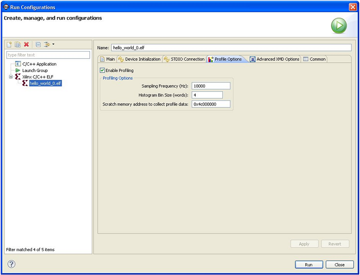

To configure options for the Profiler, do the following:
In the Project Explorer or C/C++ Projects view, select a project.
Select Run > Run.
In the Configurations dialog box, expand Xilinx C/C++
Application (GDB).
Select a run configuration.
Click the Profile Options tab.

Click to select the Enable Profiling check
box.
In the Profile Options area, specify the sampling frequency,
histogram bin size, and the scratch memory to use for profiling, where:
The sampling frequency is the interrupt interval that the profiling
routine uses to periodically check which function is currently being
executed. The routine performs the sampling by examining the program
counter at each interrupt.
The histogram bin size is the resolution for examining the program
counter location used to determine the function that is currently being
executed.
The scratch memory address is the location in DDR3 memory that the
BSP profiling services use for data collection. The application program
should never touch this space.